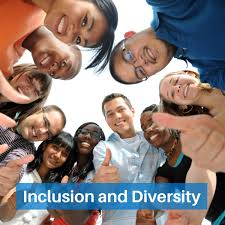
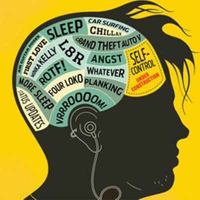

Present youth are often characterized by their access to technology, a focus on personal achievement, and a more open approach to diverse perspectives, including those related to their own identity and social issues. Past youth, while still individuals navigating their own transitions, may have been more constrained by societal expectations, less exposed to global information, and perhaps less focused on individual identity politics.
Here's a more detailed look:
Present Youth:
Technology and Digital Literacy:
Today's youth are digital natives, having grown up with the internet and various technologies. This has led to a high level of digital literacy and a tendency to be highly informed, but also potentially susceptible to misinformation.
Focus on Individual Achievement:
There's a strong emphasis on personal goals, career aspirations, and social media presence. This can be seen in their focus on accumulating "likes," pursuing educational opportunities, and actively seeking out mentorship from those who have achieved success in various fields.
Openness and Diversity:

Present youth are often more open to diverse perspectives, including those on gender identity, sexual orientation, and social justice issues. They are more likely to engage with social movements and express their opinions on a wider range of topics.
Increased Independence:
Youth in the present era have greater independence in their decision-making, particularly in matters related to identity, career paths, and social relationships.
Risk-Taking Behaviors:
They are also more likely to engage in risky behaviors, which can include substance use, risky sexual behavior, or even illegal activities.
Past Youth:
>Limited Technology and Information Access:
Youth in the past may have been less exposed to the global reach of the internet and may have had limited access to information outside of their immediate community or school.
Emphasis on Traditional Values:
Past youth may have been more influenced by traditional values, family expectations, and social norms that may have been less diverse or inclusive.
Less Focus on Individual Identity:
There may have been less emphasis on individual identity politics or social activism compared to present youth.
More Dependence on Authority:
Youth may have been more reliant on the guidance of their parents, teachers, and community leaders.
Lower Levels of Independent Decision-Making:

Youth may have had fewer opportunities for independent decision-making in areas like education, career, or relationships.